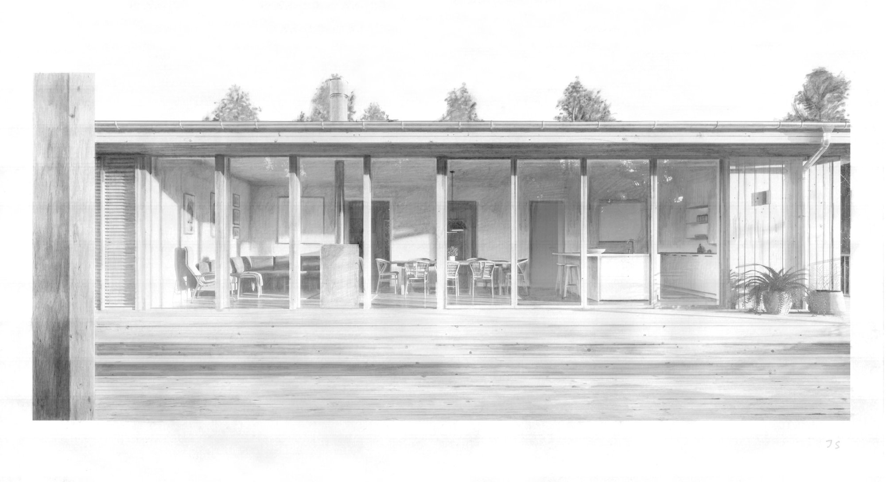
Visualisering / skissSkavkulla
Skavkulla, Karlskrona
Byggda miljöer, pågående idéer och nya perspektiv. Utforska Studio Kontexts projekt i Blekinge och bortom.

Visualisering / skissSkavkulla, Karlskrona
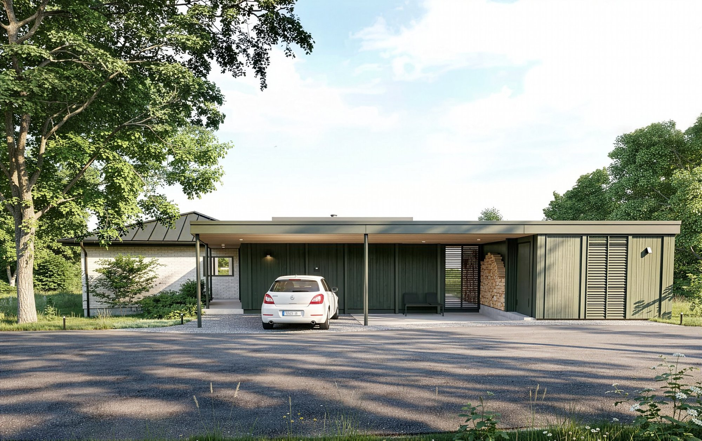
Visualisering / skissHästö, Karlskrona
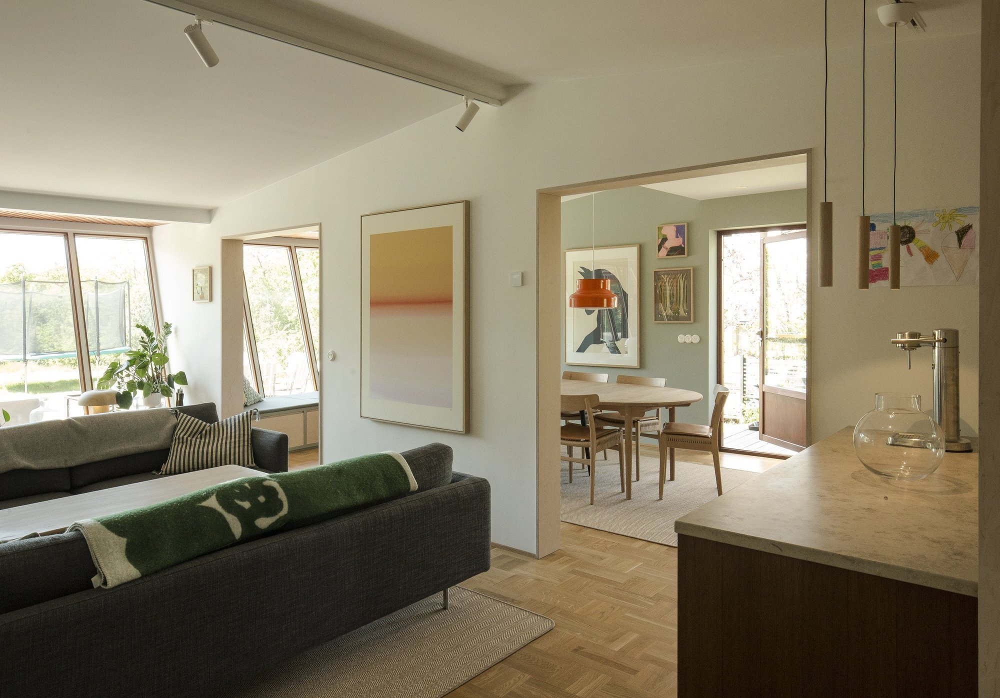
Bergåsa, Karlskrona
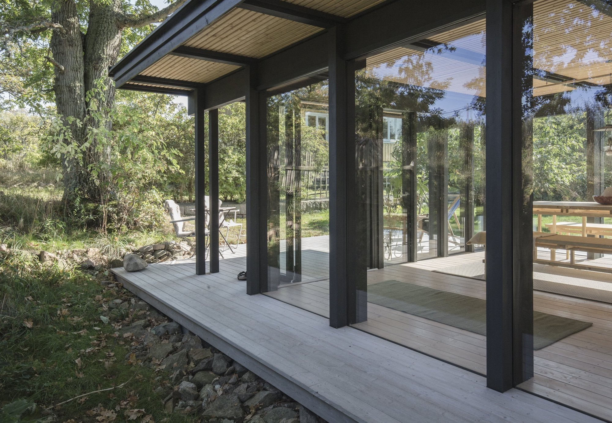
Tjurkö, Karlskrona
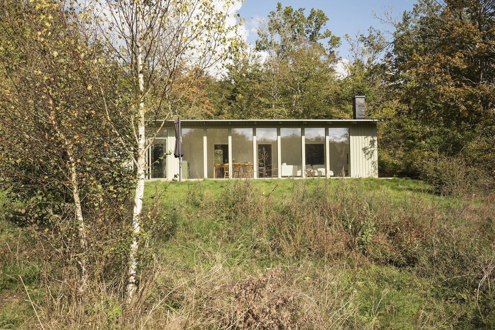
Långelycke, Karlskrona
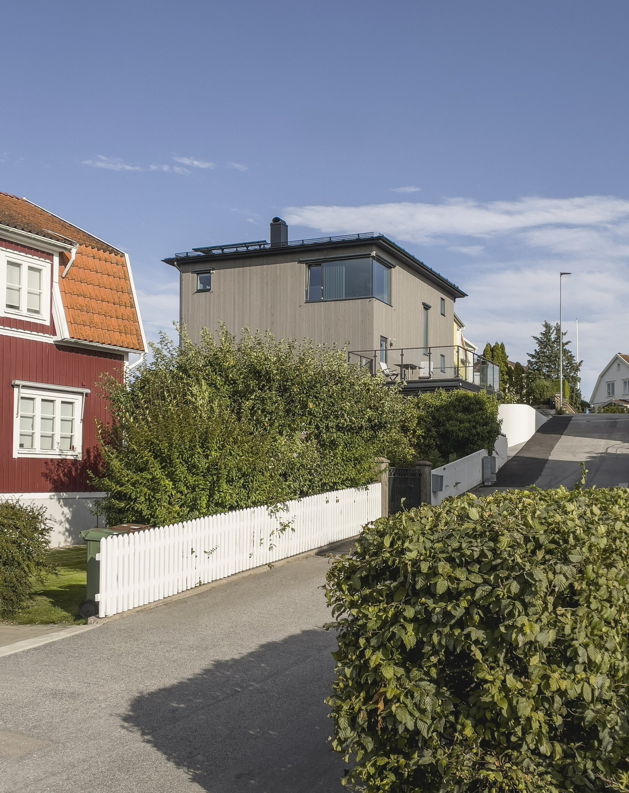
Långö, Karlskrona
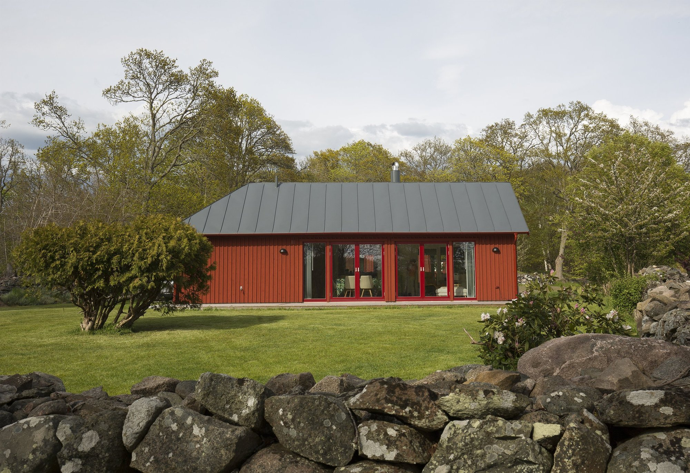
Tjurkö, Karlskrona
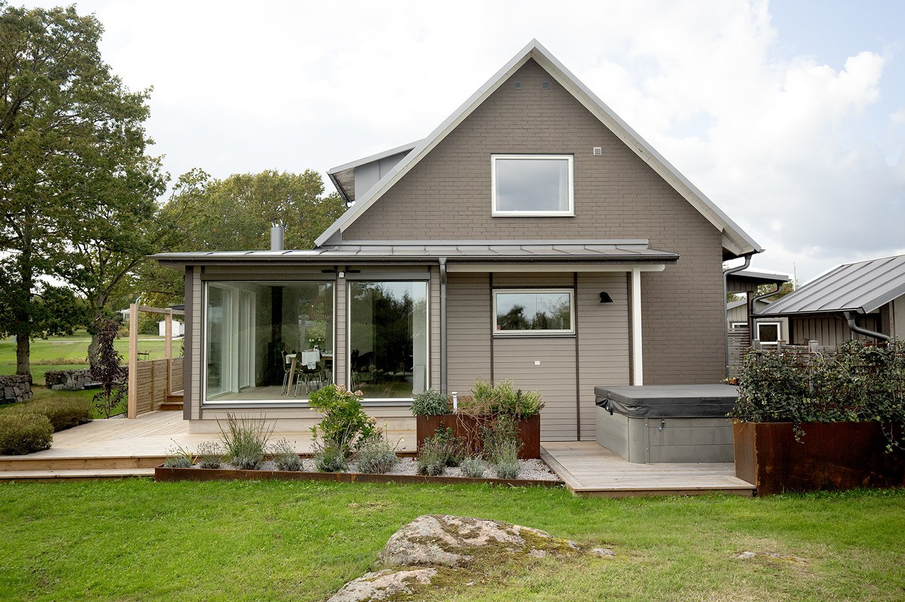
Sturkö, Karlskrona
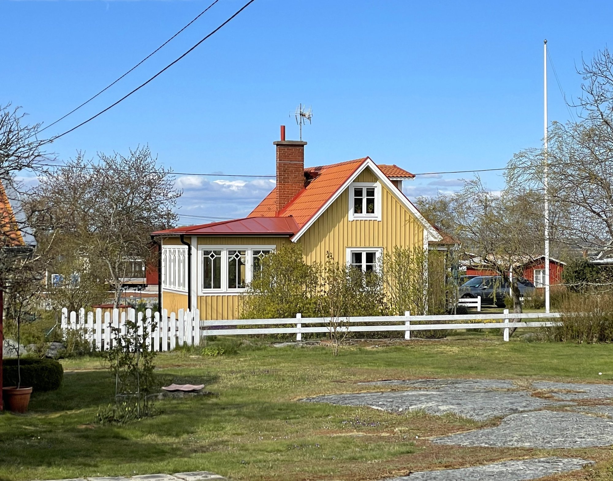
Hasslö, Karlskrona
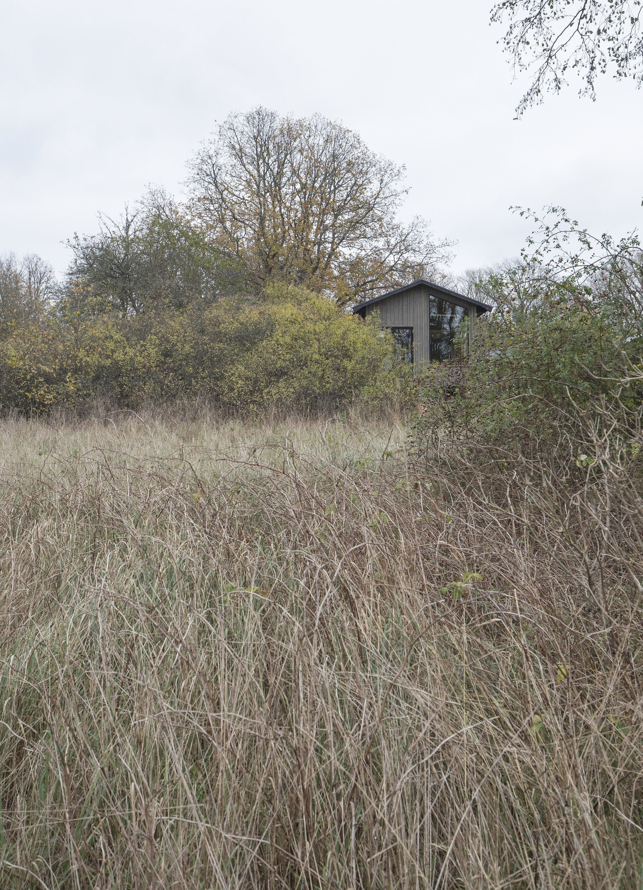
Aspö, Karlskrona
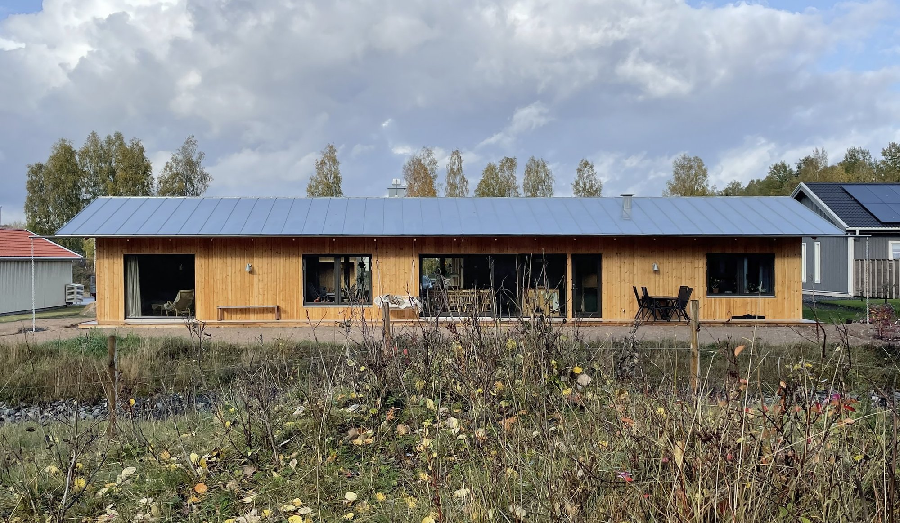
Vaggeryd
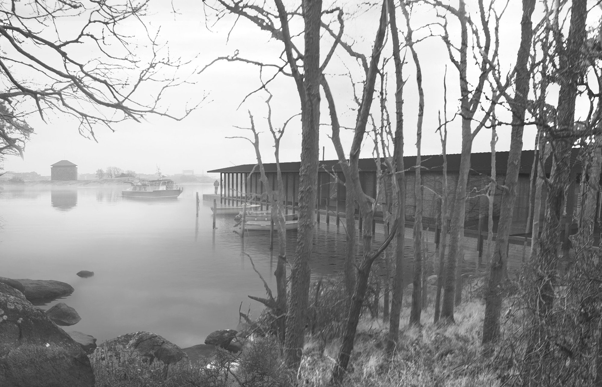
Visualisering / skissKarlskrona
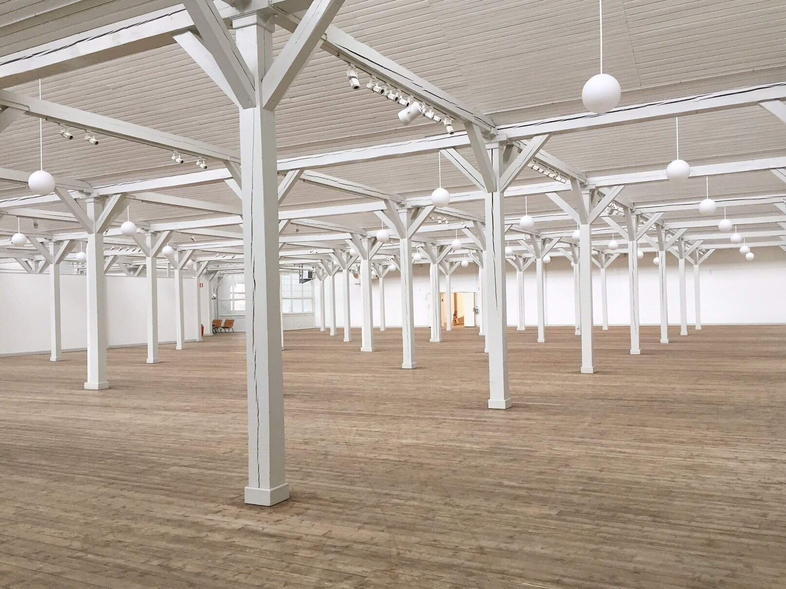
Ronneby, Blekinge
En tomt, en byggnad eller en första tanke. Vi börjar där du är.